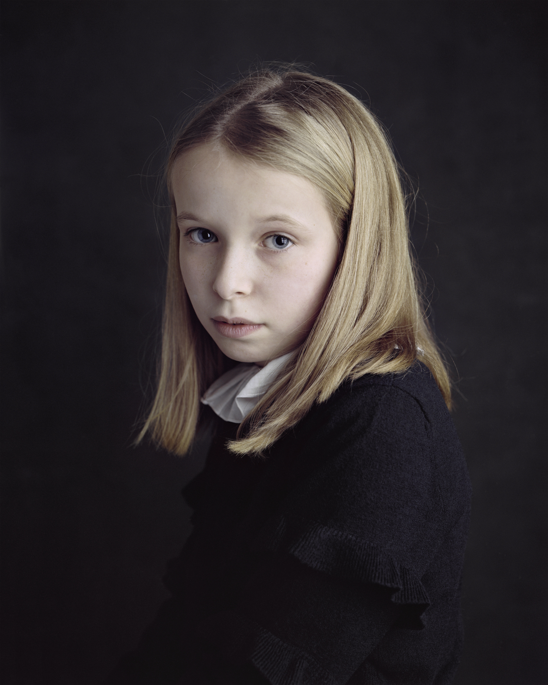
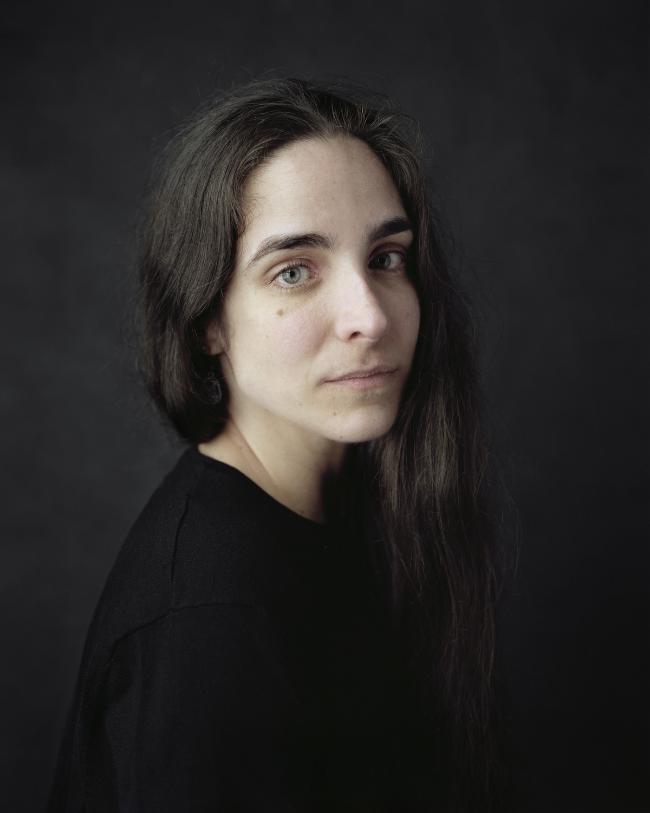
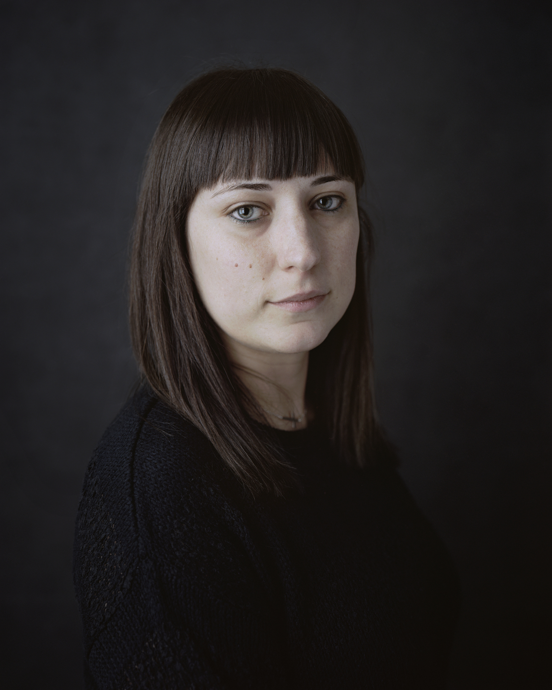
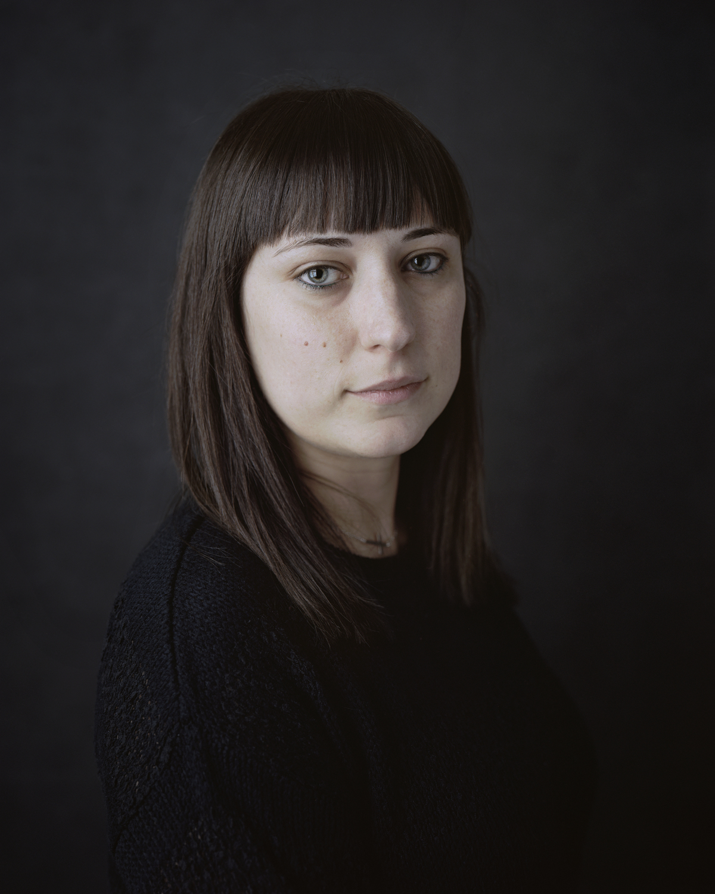

Fillos de Breogán
Unha viaxe ao pasado a través dos rostros de galegos que posúen uns trazos característicos do centro e norte de Europa. Trazos que trouxeron consigo os pobos que habitaron estas terras hai máis de 1.500 anos e que hoxe en día se conservan especialmente nas zonas máis illadas do rural.
 


 
